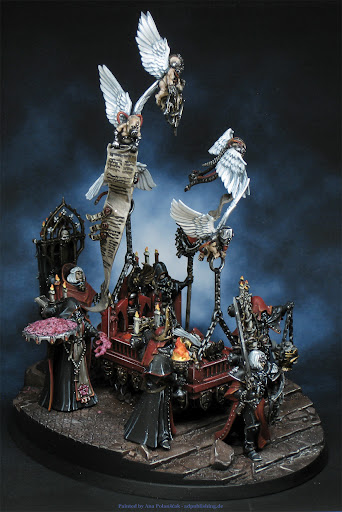
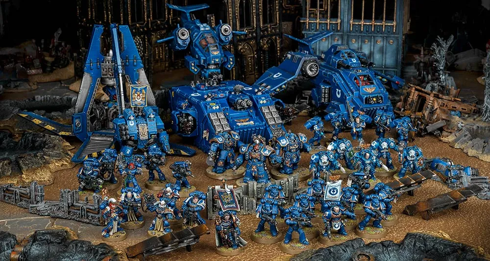
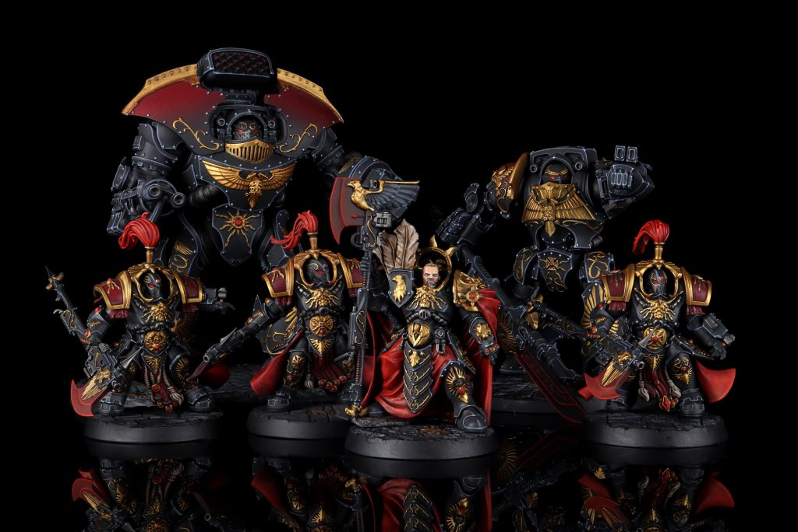
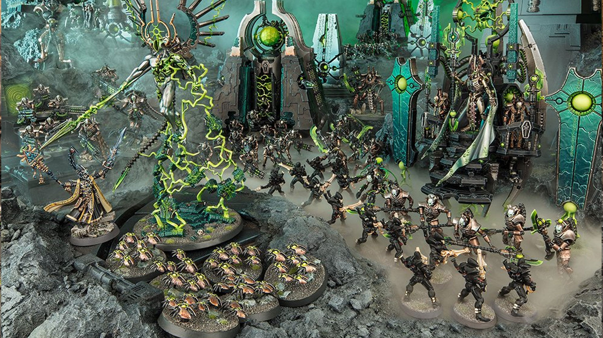

Popular this month

The Sisters of Battle have become seriously popular as of late, especially with the religious zealots of battle aesthetic! With their tanks that are literal pipe organs, and their ability to take on the most powerful of foes with their miracle dice, they are a force to be reckoned with. They are not just fun to play, but give the player a real and fun challenge with painting that really lets creativity take the lead!
Our Favourite Designs


